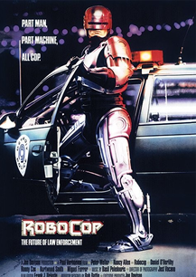
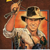

De volta para o Futuro é a franquia que as pessoas mais querem ver de volta no cinema
RoboCop ganhará documentario sobre bastidores de produção
O astro Sylvester Stallone acaba de compartilhar uma foto inédita dos bastidores de Rambo
Platon -Pérola tardia de Oliver Stone sobre o vietnã, baseado nas próprias experiências dos diretor, quiando lutou no conflito
Lucas financia novamente seu novo filme, Return of the Jedi
 Os caçadores da Arca Perdida é um filme de aventura americano
Michael Keaton veste o manto de 'Batman'
Ação e comédia estrelada por Eddie Murphy